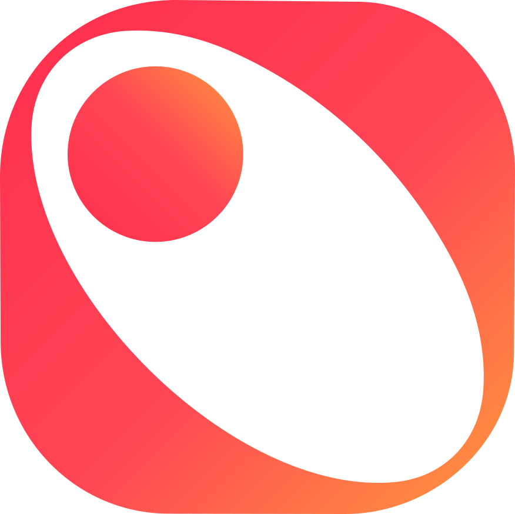
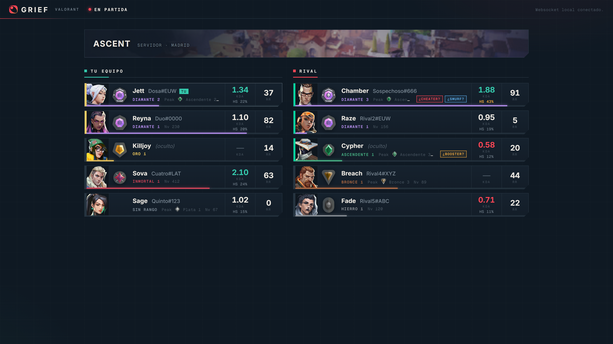
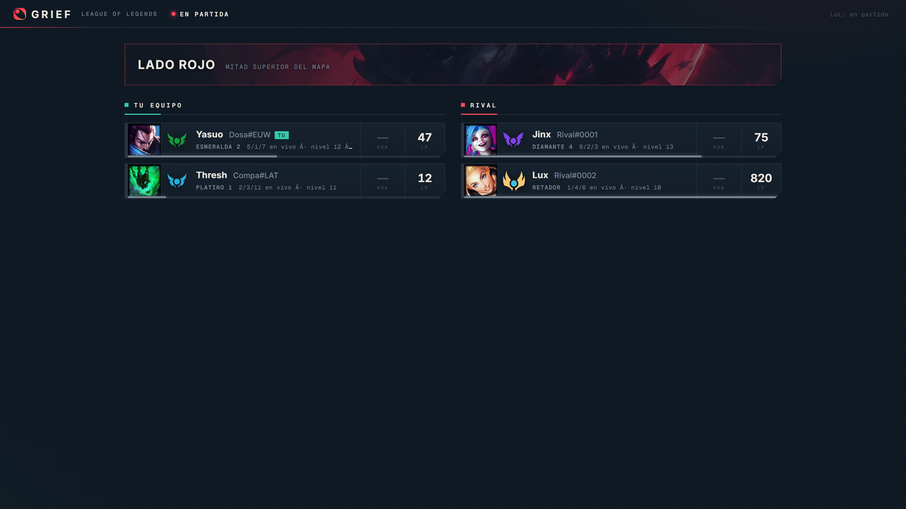

GRIEF Match trackerValorant · League of Legends
GRIEF vive en tu segunda pantalla y te muestra quien es cada uno en tu lobby: rango real, KDA reciente, parties y señales de smurfs o cuentas boosteadas. Sin overlay, sin tocar el juego, sin Overwolf.
Gratis · Windows 10/11 · codigo abierto

Partida de Valorant: mapa y servidor, los 10 con rango, RR, KDA y señales
Dos juegos, una app
Desde la seleccion de agentes: mapa y servidor, rango e insignia, RR, peak, KDA y HS% de las ultimas competitivas, nivel de cuenta, parties marcadas por color y señales de posible cheater, smurf o booster.
En seleccion de campeones ves a tu equipo con rango, LP y emblema; en partida, los 10 con su campeon, el lado que te toco y KDA en vivo de la propia API del juego.

League of Legends: tu lado del mapa, campeones, emblemas y KDA en vivo
Que hace distinto
Posible Cheater, Posible Smurf y Posible Booster salen de un puntaje con varias evidencias (HS%, RR por victoria, edad de cuenta, rachas). El motivo exacto siempre esta en el tooltip.
Mismo color en la espina de la fila: van juntos. Funciona incluso con jugadores en modo incognito y con el equipo rival.
Un websocket local avisa en cuanto arranca la seleccion de agentes. Nada de refrescar ni esperar sondeos.
GRIEF nunca toca el proceso del juego ni su memoria. Lee las API oficiales del cliente, como hacen las webs de stats, pero en tu maquina.
El tracker corre sin dependencias sobre Node y la app pesa lo que pesa su ventana. Pensado para la segunda pantalla.
No hay cuenta, no hay servidor nuestro, no hay telemetria. Todo se consulta desde tu equipo directo a las API de cada juego.
Listo en un minuto